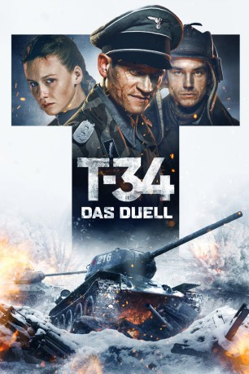
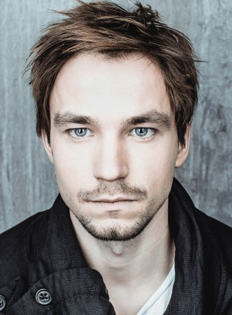
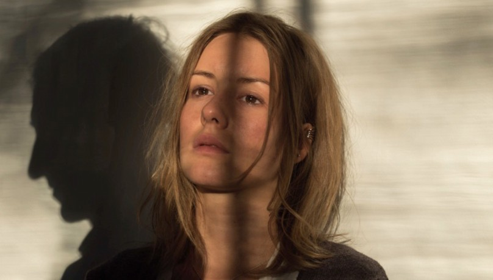
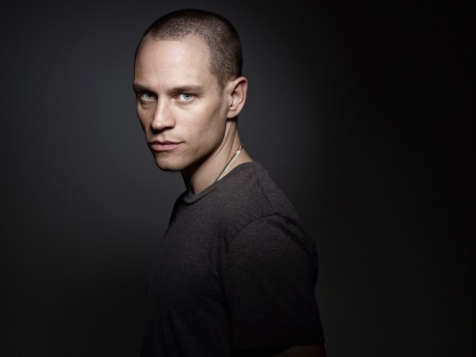

#11894 T-34: Das Duell
 
 IMDB-Wertung: 6.4 / 10
IMDB-Wertung: 6.4 / 10  Metascore: 0
Metascore: 0 
Der Leutnant Nikolai Iwuschkin, Kommandant eines T-34, führt einen ungleichen Kampf gegen das Panzerass Klaus Jager in einem Kampf nahe Moskau. Seine Mission ist eher ein Selbstmord - ein Dutzend deutscher Panzer alleine zu vernichten. Glück kommt den Mutigen zugute. Er gewinnt die Schlacht, und er überlebt nur knapp, verliert jedoch seinen Panzer und landet drei Jahre lang in Gefangenschaft. Im Frühjahr 1944 befiehlt die Wehrmacht Jager, die ,,Ohrdruf re range" zu übernehmen und diese in einem Trainingszentrum für deutsche Panzerkräfte, in eine Elite zu verwandeln. Dabei wird der neueste T-34 als Ziel verwendet. So kreuzen sich die Leben von Jager und Ivushkin wieder. Jager bietet Ivushkin an, Kommandant des legendären T-34 Panzers zu werden, und seine Crew aus anderen Lagergefangenen zusammen zu stellen. Es gelingt jedoch nicht nach Plan, als Ivushkin die Übungen für eine mutige und sorgfältig geplante Flucht nutzt.
Jahr: 2018
Dauer: 139 Minuten
FSK: 12
Land: Russland Studio: Tiberius FilmTonspuren:
Untertitel: Deutsch,
Auflösung: 1080p (1920x808) Größe: 4956 MB
Genre: Action, Krieg
Regisseur: Aleksey Sidorov
Drehbuch: Aleksey Sidorov
Soundtrack: Ivan Burlyaev, Vadim Maevskiy, Dmitriy Noskov, Aleksandr Turkunov
Darsteller:
-  Alexander Petrov als Nikolay Ivushkin
-  Irina Starshenbaum als Anya Yartseva
-  Vinzenz Kiefer als Klaus Jäger
- Yuriy Borisov als Ionov
- Artur Sopelnik als Kobzarenko
- Pyotr Skvortsov als Lykov
- Semyon Treskunov als Vasiliy Teterya
- Joshua Grothe als Thielicke
- Wolfgang Cerny als Hein
- Artyom Bystrov als Korin
- Mike Davies als Guderian
- Elena Drobysheva als Ivushkin's Mother
 Philip Hersh als Hein / Gimmler / Oberkap / Voice on radio
Philip Hersh als Hein / Gimmler / Oberkap / Voice on radio- Artur Ivanov als Narrator
- Robinson Reichel als Heinrich Himmler
- Anton Shurtsov als Chief of Staff
- Vladimir Vinogradov als Refueller
- Viktor Dobronravov als Stepan Vasilyonok
- Anton Bogdanov als Demyan Volchok
- Guram Bablishvili als Gabuliya
- Danila Rassomakhin als Vasechkin
- Dirc Simpson als Grimm
- Vasiliy Butkevich als Korin's Orderly
- Mikael Dzhanibekyan als
- Christoph Glaubacker als Weiss
- Igor Khripunov als Lapikov
- Kirill Lopatkin als German Soldier
- Vladislav Manin als The Sapper
- Paul Orlyanskiy als Pilot
- Semyon Shemes als Radio Operator
- Yaroslav Shtefan als Machine-Gunner Makeev
- Nikola Todorovic als German Soldier
- Aleksandra Torgushnikova als Vasilyonok's Wife
- Danil Tyabin als Radio Operator
- Christoph Urban als Schlozer
- Vasily Urievskiy als
- Aleksey Ushakov als Telephonist
- Polina Volkova als Daughter of the Mistress
- Alexandr Zaporozhets als Petya
Datei: X:\2018(N-Z)\T-34 Das Duell (2018, FSK12, 1920x808).mkv seit 08.10.2019
Festplatte: HD 2018(G-Z)-2019(A-Z)
 Es gibt insgesamt 172 Filme in der Gruppe '2018(N-Z)'
Es gibt insgesamt 172 Filme in der Gruppe '2018(N-Z)'